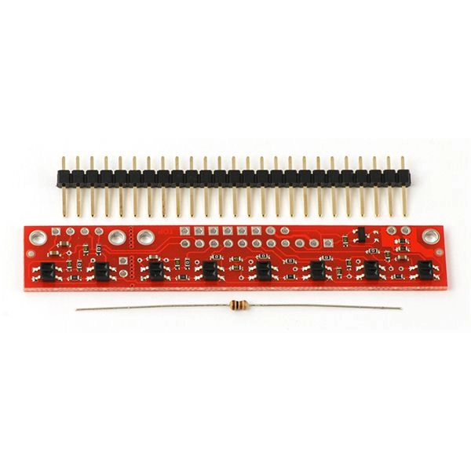
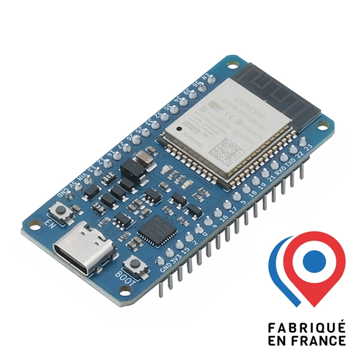
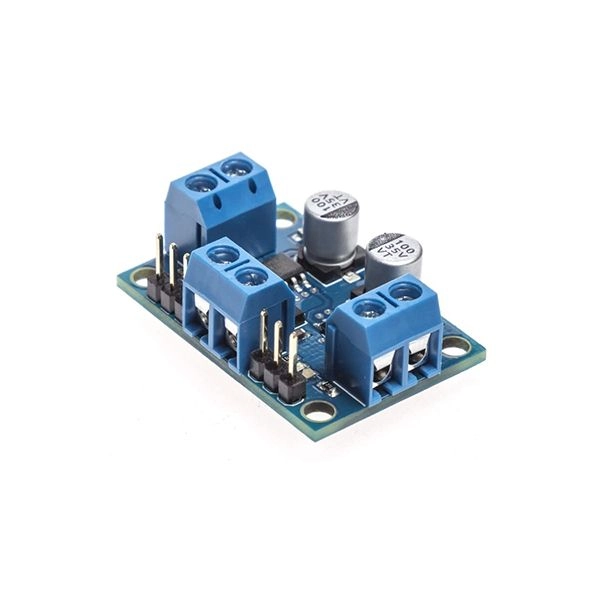
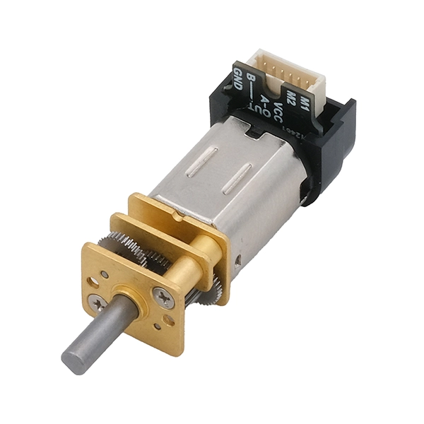
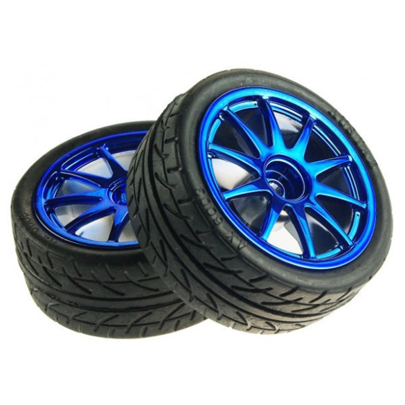
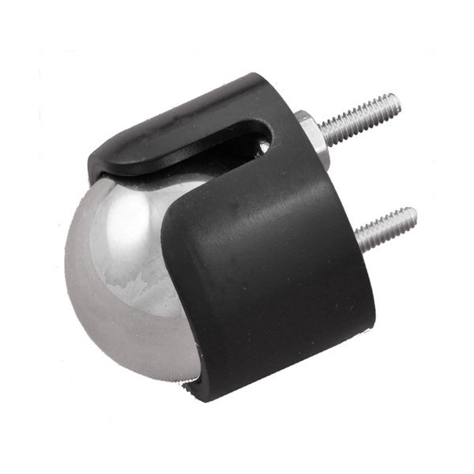
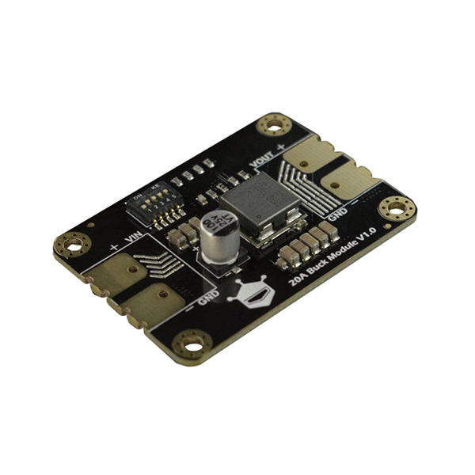
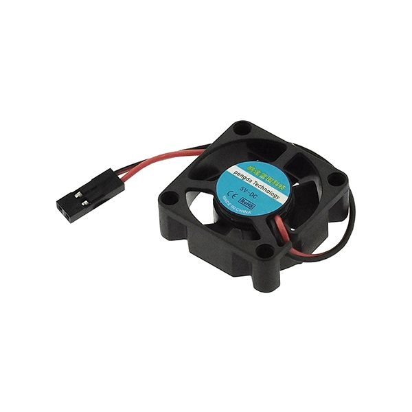

Objectif
Suivre une trajectoire
Le robot doit détecter la ligne au sol et corriger automatiquement sa direction.
Bienvenue sur le site de présentation de notre robot autonome. Son objectif est de suivre une ligne noire sur un fond clair grâce à des capteurs et à une carte ESP32. Simple à dire, un peu moins simple à réussir quand le robot décide de visiter la salle tout seul.
Le robot doit détecter la ligne au sol et corriger automatiquement sa direction.
La carte ESP32 lit les capteurs, prend une décision et envoie une commande aux moteurs.
Il n’a pas encore le permis B, mais il apprend déjà à rester dans sa voie.
Notre équipe est composée de trois étudiants de GEII 1 à l’UVSQ de Vélizy. Nous avons travaillé sur la conception, le câblage, la programmation, les essais et la réalisation du site web.
Participation au montage, aux tests et à l’amélioration du comportement du robot.
Participation à la programmation, au câblage et à la mise en forme du site web.
Participation à l’intégration des composants, aux essais et à la validation du robot.
Le robot suiveur de ligne est un système embarqué capable de se déplacer automatiquement en suivant une ligne noire. Il utilise des capteurs placés à l’avant pour détecter la position de la ligne, puis il ajuste la vitesse de ses moteurs pour rester sur la trajectoire.
Les capteurs détectent le contraste entre la ligne noire et le fond clair. Le programme analyse ensuite si la ligne est à gauche, au centre ou à droite, puis corrige la trajectoire.
Le robot se déplace grâce à deux roues motrices. Une roue libre permet de stabiliser le châssis pendant les déplacements.
Voici les principaux composants utilisés pour réaliser le robot.

Elle détecte la ligne noire au sol à l’aide de plusieurs capteurs analogiques.

C’est le cerveau du robot. Elle lit les capteurs et commande les moteurs.

Elle permet de piloter les moteurs sans les brancher directement à l’ESP32.

Ils entraînent les roues. Les encodeurs peuvent mesurer la rotation des roues.

Elles assurent le déplacement du robot sur la piste.

Elle stabilise le robot pendant son déplacement.

Il adapte la tension d’alimentation pour alimenter correctement les cartes électroniques.

Il peut aider au refroidissement du montage électronique.
Les épreuves permettent d’évaluer la capacité du robot à suivre une ligne, à réagir dans les virages et à rester stable pendant son déplacement.
Le robot doit avancer en suivant une ligne droite. Cette épreuve permet de valider le sens des moteurs et le réglage des capteurs centraux.
Le robot doit suivre des courbes en modifiant la vitesse du moteur gauche et du moteur droit.
Le robot doit limiter les zigzags. L’objectif est d’éviter qu’il se comporte comme un caddie de supermarché.
Le programme est écrit pour une carte ESP32 avec l’environnement Arduino. Il lit les huit capteurs analogiques, compare les valeurs à un seuil, puis commande les moteurs avec un signal PWM.
Chaque capteur renvoie une valeur analogique. Si la valeur dépasse le seuil, le programme considère que la ligne noire est détectée.
Le programme compte les capteurs actifs à gauche, au centre et à droite. Selon le résultat, il décide de tourner ou d’avancer tout droit.
Pour tourner, le robot ralentit un moteur et accélère l’autre. Cette différence de vitesse permet de corriger la trajectoire.
Les encodeurs sont présents sur les moteurs, mais ils ne sont pas utilisés dans la version de base. Ils pourraient servir à mesurer précisément la vitesse des roues.
if (detectionCentre > 0) {
avancer(vitesseBase, vitesseBase);
}
else if (detectionGauche > 0) {
avancer(vitesseBase - correction, vitesseBase + correction);
}
else if (detectionDroite > 0) {
avancer(vitesseBase + correction, vitesseBase - correction);
}
else {
avancer(70, 70);
}
Ajoutez ici le lien vers le fichier du programme :
Télécharger le programme Arduino
Pourcentage estimé de programmation assistée par IA : à compléter %. Le programme final doit être compris, testé et validé par l’équipe.
Cette page sert à présenter les essais du robot. Vous pouvez remplacer les fichiers vidéo par vos vraies vidéos.
Insérez ici une vidéo du robot sur une ligne droite.
Insérez ici une vidéo du robot sur une piste avec virages.